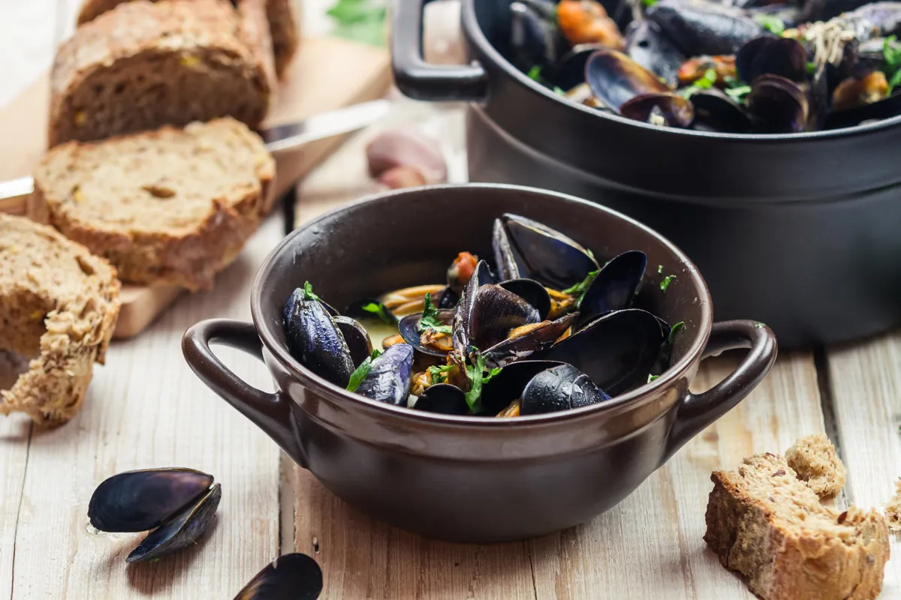

Marinated Mussels

Description
Mussels marinated in white wine - French style
Ingredients
- 30g butter
- 15cl dry white wine
- 1 teaspoon flour
- parsley
- salt
- pepper
- 4 liters mussels
- 2 shallots
Steps
- Chop the shallots.
- Scrape well and wash the mussels. Put them in a casserole dish with 1 knob of butter, the chopped shallots and the white wine.
- Open them in the covered casserole dish over high heat for a few minutes. Stir 2 or 3 times during cooking.
- As soon as they are open, remove the mussels from the casserole, keeping the cooking juices. Place them in a deep dish and keep them warm.
- Return the juice to the heat. Mix with a fork 1 teaspoonful of flour with the same volume of butter or margarine.
Add everything to the juice from cooking the mussels on the fire. Let boil for a moment. Salt and pepper.
- Pour over the mussels. Sprinkle with chopped parsley and serve.